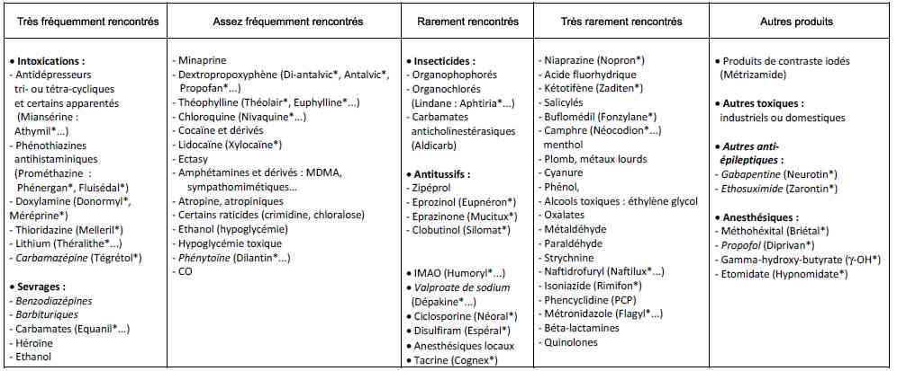
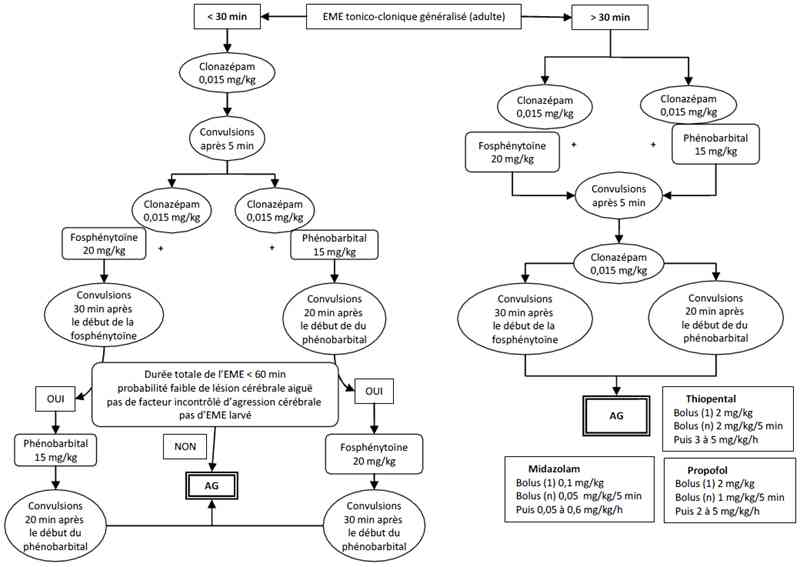

Bienvenue Sur Medical Education
Etat de mal épileptique
Spécialité : metabolisme / neurologie / pédiatrie /
Points importants
-
Fréquent : incidence annuelle 10-40/100.000 habitants, plus élevée chez l'enfant et > 60 ans
-
Mortalité : 3 à 39% (selon l'étiologie : encéphalopathie anoxique, l'âge, la durée, la prise en charge initiale, et la fièvre ou l'infection chez l'enfant : mauvais pronostic)
-
Définitions de l'état de mal (EME) = crise d'épilepsie qui perdure ou se répète à intervalles brefs sans reprise de conscience (les crises sérielles avec reprise de la conscience n'entrent pas dans la définition de l'EME) :
-
EME au sens large = présence de crises continues - ou succession de crises - sans amélioration de la conscience sur une période de 30 min
-
gravité particulière de l'EME tonico-clonique généralisé, défini par la présence de crises continues ou subintrantes (sans retour à la conscience) pendant au moins 5 min
-
EME larvé : évolution défavorable d'un EME tonico-clonique généralisé non ou mal traité
-
EME réfractaire : résistance à au moins 2 médicaments anti-épileptiques (AE) différents administrés à posologie adaptée
-
Différencier l'EME convulsif, de diagnostic clinique, de l'EME non convulsif, de diagnostic EEG
-
Différencier l'EME d'emblée généralisé de l'EME à point de départ partiel secondairement généralisé (valeur localisatrice), le plus fréquent
-
Deux cadres cliniques : crise inaugurale (50 à 60% des cas) ou crise chez un épileptique connu (sous dosage en AE)
-
Anamnèse, examen clinique et recherche de complications importants (Cf. Convulsions)
-
Hospitalisation urgente avec traitement précoce et efficace, parallèle au bilan (EEG +++)
Présentation clinique / CIMU
SIGNES FONCTIONNELS
- Fréquent : incidence annuelle 10-40/100.000 habitants, plus élevée chez l'enfant et > 60 ans
- Mortalité : 3 à 39% (selon l'étiologie : encéphalopathie anoxique, l'âge, la durée, la prise en charge initiale, et la fièvre ou l'infection chez l'enfant : mauvais pronostic)
-
Définitions de l'état de mal (EME) = crise d'épilepsie qui perdure ou se répète à intervalles brefs sans reprise de conscience (les crises sérielles avec reprise de la conscience n'entrent pas dans la définition de l'EME) :
- EME au sens large = présence de crises continues - ou succession de crises - sans amélioration de la conscience sur une période de 30 min
- gravité particulière de l'EME tonico-clonique généralisé, défini par la présence de crises continues ou subintrantes (sans retour à la conscience) pendant au moins 5 min
- EME larvé : évolution défavorable d'un EME tonico-clonique généralisé non ou mal traité
- EME réfractaire : résistance à au moins 2 médicaments anti-épileptiques (AE) différents administrés à posologie adaptée
- Différencier l'EME convulsif, de diagnostic clinique, de l'EME non convulsif, de diagnostic EEG
- Différencier l'EME d'emblée généralisé de l'EME à point de départ partiel secondairement généralisé (valeur localisatrice), le plus fréquent
- Deux cadres cliniques : crise inaugurale (50 à 60% des cas) ou crise chez un épileptique connu (sous dosage en AE)
- Anamnèse, examen clinique et recherche de complications importants (Cf. Convulsions)
- Hospitalisation urgente avec traitement précoce et efficace, parallèle au bilan (EEG +++)
Présentation clinique / CIMU
SIGNES FONCTIONNELS
Généraux
- Fièvre
- Encombrement bronchique et dyspnée (pneumopathie d'inhalation)
Spécifiques
- Morsure de langue (ou de la face interne de joues)
- Perte d'urines
- Signes de localisation neurologique
- Syndrome méningé
CONTEXTE
Terrain
- Recherche d'épilepsie préexistante (environ 50% des cas)
Traitement usuel
- Prise de xénobiotiques abaissant le seuil épileptogène
- Prise d'un nouveau médicament
- Modification récente des AE
Antécédents
- Lésions structurelles du système nerveux central
Circonstances de survenue
- Traumatisme crânien
- Facteurs favorisants (lumière stroboscopique...)
- Lieu et horaire de la crise
- Sevrage relatif ou absolu en AE (interaction médicamenteuse)
- Privation de sommeil
- Prise de substances ou médicaments abaissant le seuil épileptogène
 _253 Tableau Principales causes toxiques de coma convulsif ou de convulsions
- Infection intercurrente
-
Chez un patient non épileptique :
- recherche d'une agression cérébrale ou systémique aiguë
- intoxication alcoolique ou sevrage éthylique (diminution d'alcoolémie chez l'éthylique chronique)
- voyage (zone d'endémie palustre)
EXAMEN CLINIQUE
- Interrogatoire des témoins, recherche et localisation des symptômes initiaux
-
Examen somatique complet :
- perte d'urines
- morsure de langue ou de face interne de joue
- auscultation cardio-pulmonaire
- recherche des différentes phases d'une convulsion généralisée ou non (coma sans reprise de conscience) : EME tonique, tonico-clonique, clonique, hémiconvulsif, myoclonique ou confusionnel
- examen neurologique exhaustif (recherche d'automatismes, de signes déficitaires focaux persistants ; de signes méningés)
-
recherche de complications :
- traumatisme crânien
- luxation postérieure de l'épaule (abolition de la rotation externe active et passive)
- signes de compression musculaire
- rechercher à distance des paralysies nerveuses par compression, fractures diverses, contusions (viscérales), rhabdomyolyse et signes d'insuffisance rénale
-
Classification opérationnelle en pratique :
-
EME de pronostic vital engagé à court terme :
- EME convulsif généralisé (d'emblée ou secondairement) tonico-clonique
- EME larvé
-
EME de pronostic vital et/ou fonctionnel engagé à moyen terme :
- EME confusionnel partiel complexe
- EME convulsif focal avec ou sans marche Bravais-Jacksonienne
-
EME de pronostic vital non engagé à court terme :
- EME convulsif généralisé myoclonique
- EME absence
- EME à symptomatologie élémentaire (sans rupture de contact : hallucinations...)
- Epilepsie partielle continue
-
EME de pronostic vital engagé à court terme :
EXAMENS PARACLINIQUES SIMPLES
- Glycémie capillaire +++, FC, PA, FR, SpO2
- ECG avant traitement par AE (recherche de troubles conductifs)
CIMU
- Tri 1 à 2 selon l'étiologie
Signes paracliniques
-
Adaptés au contexte et centrés sur la recherche des causes et des conséquences de l'EME, ils ne retarderont pas le traitement urgent
BIOLOGIQUE
-
Glycémie capillaire puis sanguine (hyperglycémie initiale puis hypoglycémie si l'EME se prolonge ; hypoglycémie causale de jeûne ou diabétique)
-
Ionogramme sanguin : recherche de dysnatrémie (hyponatrémie), de dyskaliémie, de dyscalcémie (hypocalcémie), dysmagnésémie et dysphosphorémie
-
Dosage de l'urée (hyperazotémie), de la créatinine sanguines (insuffisance rénale fonctionnelle secondaire : tubulopathie), et des CPK (rhabdomyolyse)
-
Lactates sanguins (hyperlactatémie)
-
Gaz du sang : acidose métabolique et/ou hypercapnique, hypoxie
-
Au maximum défaillance multiviscérale (CIVD...)
-
Bilan hépatique selon contexte (éthylisme)
-
Bilan toxicologique sanguin et urinaire (alcoolémie, recherche de toxiques potentiellement épileptogènes, dosage quantitatif des AE si traitement préalable à la recherche d'un sous-dosage)
-
HbCO (selon contexte)
-
Bêta HCG sériques (selon contexte : risque foetal et iatrogénique)
-
Eventuellement sérologie VIH et frottis sanguin-goutte épaisse
-
PL : une pléiocytose modérée du LCR (5 à 30 cellules/mm3) et une discrète hyperprotéinorachie (< 1 g/L) peuvent exister en dehors de tout traumatisme ou toute infection dans 15% des EME ; réalisée surtout en présence de convulsions fébriles sans HTIC, et souvent après le scanner (mais ne devant pas retarder les traitements anticonvulsivant ni antibiotique d'une éventuelle méningo-encéphalite), elle recherche aussi les PCR HSV 1 et 2
IMAGERIE
Radiographies thoraciques et des lésions secondaires aux convulsions sont systématiques
TDM ou IRM cérébrale, d'indication large mais systématique en cas
- D'EME inaugural de cause obscure
- Des signes focaux (clinique ou EEG)
- Après un traumatisme crânien ou un acte neurochirurgical, ou une HTIC
- Si une PL est nécessaire : contexte infectieux (ou syndrome méningé) avec coma ou signes de localisation
- Devant un terrain particulier (cancer, immunodépression, traitement anticoagulant...)
- TDM cérébrale sans et avec injection et reconstruction veineuse si suspicion de thrombophlébite cérébrale
- Recherche d'un processus expansif intracrânien, de lésions traumatiques, d'une HTIC, d'une thrombophlébite cérébrale ou d'un AVC
EEG (rarement disponible en urgence)
- Elimine un EME non convulsif (si troubles de la vigilance > 6 h)
- De tracé souvent modifié au décours, il recherche des éléments épileptiformes (pointes brèves et amples à début et fin brusques, souvent associées à des ondes plus lentes : complexe pointe-onde)
- Son caractère normal (en postcritique) n'élimine pas la comitialité
- Son apport est primordial dans le diagnostic positif ou différentiel et l'orientation étiologique de tout EME.
-
Indiqué en urgence dans :
- l'EME convulsif généralisé
- l'EME non convulsif de type confusionnel et de doute sur un pseudo-EME
- Un test d'injection d'un AE n'est en faveur d'une épilepsie que s'il corrige les anomalies EEG et améliore le patient cliniquement
- Chez l'enfant, un EEG de longue durée (> 12 h) est utile au diagnostic d'EME non convulsif et surveiller l'efficacité des traitements
Diagnostic étiologique
Les EME symptomatiques de l'adulte relèvent surtout (75% des cas) d'une cause aiguë, cérébrale ou systémique. Dans 10% des, cas, l'enquête étiologique est négative
- Infections (10%) : méningo-encéphalites (3%), abcès, neuropaludisme
- Troubles métaboliques (15%) et insuffisances hépatique ou rénale
- Causes médicamenteuses : sevrage (sous dosage en AE : 35%) ou surdosage, et toxiques (3%)
_253 Tableau Principales causes toxiques de coma convulsif ou de convulsions
- Pathologie liée à l'alcool (15%) : épilepsie ou sevrage
-
Causes lésionnelles :
- tumeurs (7%)
- AVC ischémiques et hématomes intracérébraux à la phase aiguë (20%) ou sur séquelles (25%)
- traumatisme crânien et hématome sous-duraux (5%)
- post-opératoire de neurochirurgie
- thrombophlébite cérébrale
- Autres (anoxie cérébrale, éclampsie...)
Les EME de l'enfant relèvent de
- Syndrome fébrile (50%) secondaire à une infection systémique
- Lésions cérébrales non aiguës (40%) : malformation ou lésions anciennes compliquées
- Sous-dosage en AE (20%)
- Autres (10%) : métaboliques (hypocalcémie, hypomagnésémie), idiopathiques, cryptogénétiques...
Diagnostic différentiel
-
Crises sérielles : récupération de la conscience entre les crises mais pouvant évoluer vers un EME
-
Pseudo-EME d'origine psychogène : fréquent, avec persistance de réactions d'éveil lors de la "phase convulsive", évitement permanent du regard, manifestations motrices atypiques, souvent anarchiques et spectaculaires, pas de désaturation artérielle per-critique (EEG +++)
-
Mouvements anormaux non épileptiques :
-
myoclonies non épileptiques (contexte post-anoxique, pathologies dégénératives, maladie de Creutzfeldt-Jakob, encéphalopathies métaboliques ou toxiques)
-
astérixis
-
tremblements
-
mouvement choréique
-
dystonies
-
dyskinésies
-
hémiballisme
-
tics
-
Crises toniques postérieures, accompagnant un engagement cérébral ou une anoxie aiguë, avec hypertonie axiale, tremblements des membres pseudo-cloniques en vague, hyperpnée et sueurs
-
L'EME non convulsif, non confusionnel, partiel sensitif est à distinguer d'un AVC ischémique (installation brutale) ou d'une migraine accompagnée (installée en quelques minutes avec céphalée caractéristique). Migraine avec aura chez l'enfant
-
Autres causes de coma
Traitement
-
Si contexte infectieux avec coma ou signes de localisation : antibiotiques d'emblée à visée méningée puis TDM puis PL. Systématique chez l'enfant
TRAITEMENT PREHOSPITALIER/INTRAHOSPITALIER
- myoclonies non épileptiques (contexte post-anoxique, pathologies dégénératives, maladie de Creutzfeldt-Jakob, encéphalopathies métaboliques ou toxiques)
- astérixis
- tremblements
- mouvement choréique
- dystonies
- dyskinésies
- hémiballisme
- tics
Traitement
- Si contexte infectieux avec coma ou signes de localisation : antibiotiques d'emblée à visée méningée puis TDM puis PL. Systématique chez l'enfant
TRAITEMENT PREHOSPITALIER/INTRAHOSPITALIER
La prise en charge d'un EME convulsif généralisé nécessite en préhospitalier l'intervention d'une équipe médicale d'urgence et une hospitalisation systématique
Stabilisation et prise en charge initiale
- Glycémie capillaire systématique (recherche d'hypoglycémie)
- Pose de 2 accès veineux de bon calibre (12 à 14 Gauge), bien fixés (convulsions)
- Prévention des traumatismes : mise en position latérale de sécurité ou en décubitus dorsal si intubation, pas de contention forcée, protéger des traumatismes
- Monitorage de la FC, FR, de la PA et de la SpO2
- Objectifs tensionnels : PAM entre 70 et 90 mmHg
- Perfusion par NaCl 0,9% sauf si EME sur hypoglycémie
- Perfusion systématique de 100 mg de B1 en IVL chez l'éthylique
- Lutte contre l'hyperthermie
- Contrôle de la glycémie : pas d'hypo ni d'hyperglycémie
- Contrôle de la natrémie
- Traitement de la rhabdomyolyse : hyperhydratation par NaCl 0,9%
- Dans tous les cas, contrôle des facteurs d'agression cérébrale (surtout si EME secondaire à lésions cérébrales aiguës)
- Traitement d'une HTIC
-
Maintien de la liberté des voies aériennes :
- aspiration pharyngée, mise en place d'une canule de Guedel
- oxygénothérapie systématique pour SpO2 ≥ 95% et PaO2 ≥ 80 mmHg
- intubation et ventilation mécanique non systématiques d'emblée (en intrahospitalier, la sécurité du transport autorise un délai plus court de recours à la ventilation)
-
Indications de l'intubation/ventilation mécanique :
- détresse respiratoire aiguë : inhalation, encombrement bronchique
- altération profonde et prolongée de la vigilance malgré arrêt des convulsions
- EME réfractaire aux AE non anesthésiques après un délai de prise en charge de 30 min (nécessité de recours à des agents anesthésiques)
Suivi du traitement
- Sauf HTIC, arrêt des sédatifs à l'admission hospitalière : évaluation neurologique et EEG
- Diminuer le débit de perfusion de l'AE ou arrêt si HoTA ou trouble du rythme cardiaque
- Curarisation ponctuelle possible sous ventilation pour PL, EEG ou TDM
- Surveillance clinique de la cessation des crises ; en cas de persistance de troubles de vigilance avec arrêt des mouvements anormaux au-delà de 6 h, faire un EEG (recherche d'un EME infraclinique)
- Surveillance EEG : suppression des crises, bouffées-suppressions (burst-suppression) ou silence électrique
MEDICAMENTS
Chez l'adulte
- Un traitement anti-épileptique doit être administré en urgence devant des crises convulsives généralisées continues ou subintrantes persistant au moins 5 min sans attendre l'EEG et devant un EME larvé
-
En 1re intention, si le patient est pris en charge entre 5 et 30 min après le début des convulsions :
-
benzodiazépine en monothérapie en IV sur 2 à 3 min, à renouveler si besoin une fois après 5 min à la même dose
- clonazépam (Rivotril®) : 0,015 mg/kg
- ou diazépam (Valium®) : 0,15 mg/kg
- si voie veineuse impossible : midazolam (Hypnovel®) en IM à 0,15 mg/kg ou par voie buccale à 0,3 mg/kg
-
benzodiazépine en monothérapie en IV sur 2 à 3 min, à renouveler si besoin une fois après 5 min à la même dose
-
Si persistance des crises : association à un AE majeur en IV (en fonction des contre-indications, des risques iatrogènes possibles et de délai d'action) :
-
phénobarbital (Gardénal®): en IV à la dose de 15 mg/kg à un débit de perfusion maximum de 100 mg/min
- l'efficacité est atteinte 20 min après le début de la perfusion
- contre-indication : insuffisance respiratoire sévère
- fosphénytoïne (Prodilantin®) à la dose de 20 mg/kg d'équivalent de phénytoïne sodique (EP), à un débit de perfusion maximum de 150 mg/min,
-
ou phénytoïne (Dilantin®) à la dose de 20 mg/kg avec un débit de perfusion maximum de 50 mg/min :
- l'efficacité est atteinte 30 min après le début de la perfusion
- contre-indications de fosphénytoïne et phénytoïne : cardiopathie sévère ou troubles de conduction
-
si contre-indication à ces 2 drogues ou décision de limitation de ventilation mécanique :
- administration de valproate de sodium (Dépakine®) à la dose de 25 mg/kg en dose de charge puis 1 à 4 mg/kg/heure en IV en fonction des taux plasmatiques
- contre-indication : hépatopathie préexistante
-
phénobarbital (Gardénal®): en IV à la dose de 15 mg/kg à un débit de perfusion maximum de 100 mg/min
-
Si le patient est pris en charge au-delà de 30 min après le début des convulsions ou si EME larvé : benzodiazépine IV d'emblée associée à un AE majeur :
- renouveler l'injection de la même benzodiazépine à la même dose si persistance des crises après 5 min
-
En 2e intention, si persistance des convulsions après administration de l'AE majeur : administrer le médicament AE non utilisé initialement (phénobarbital après phénytoïne/fosphénytoïne et inversement) si :
- EME évoluant depuis < 60 min
- pas d'EME larvé,
- faible probabilité de lésion cérébrale aiguë et
- pas de facteur d'agression cérébrale incontrôlé (choc, hypoxie, hyperthermie)
- NB : dans les autres cas, anesthésie générale (thiopental, midazolam ou propofol) et recours à la ventilation mécanique
-
Après échec de 2 lignes d'AE majeurs si EME initialement pris en charge < 30 min (EME réfractaire), ou après échec de la 1re ligne d'AE si EME pris en charge > 30 min : administration de thiopental, midazolam ou propofol et ventilation :
- thiopental (Penthotal®) = bolus initial de 2 mg/kg puis répéter les bolus à raison de 2 mg/kg sur 5 min jusqu'à arrêt des crises puis entretien en perfusion continue à la dose de 3 à 5 mg/kg/h
- propofol (Diprivan®) = bolus initial de 2 mg/kg puis répéter les bolus à raison de 1 mg/kg sur 5 min jusqu'à arrêt des crises puis entretien en perfusion continue à la dose de 2 à 5 mg/kg/h
- midazolam (Hypnovel®) = bolus initial de 0,1 mg/kg puis répéter les bolus à raison de 0,05 mg/kg sur 5 min jusqu'à arrêt des crises puis entretien en perfusion continue à la dose de 0,05 à 0,6 mg/kg/h
- Après contrôle de l'EME : relais par benzodiazépines IV ou par SNG en discontinu (clonazépam 1 à 2 mg x 3/j), immédiatement si l'EME a été contrôlé par benzodiazépines seules
Chez l'enfant
- Clonazépam = 0,02 à 0,04 mg/kg (maximum 1 mg)
- Diazépam = 0,2 à 0,4 mg/kg (maximum = 5 mg chez l'enfant < 5 ans, 10 mg au-delà)
-
Si impossibilité de voie veineuse, possibilité d'administration :
- de diazépam intrarectale (0,3 à 0,5 mg/kg)
- de midazolam par voie nasale (0,2 à 0,3 mg/kg), par voie buccale (0,2 à 0,3 mg/kg) ou par voie IM (0,2 à 0,5 mg/kg)
- Le phénobarbital est utilisé en IV à la dose de 15 à 20 mg/kg (avec débit de perfusion maximum de 100 mg/min)
- La dose de charge IV de phénytoïne est de 20 mg/kg (maximum 1 g ; avec débit de perfusion maximum de 1 mg/kg/min). La fosphénytoïne n'a l'AMM que chez l'enfant de > 5 ans à la posologie de 20 mg/kg d'équivalent phénytoïne (débit de perfusion maximum de 3 mg/kg/min d'EP)
- Thiopental à réserver aux formes les plus réfractaires (effets secondaires +++), avec bolus de 2 mg/kg répétés jusqu'à l'arrêt des convulsions puis entretien par une perfusion continue de 3 à 5 mg/kg/h
- Chez le nourrisson, en l'absence d'étiologie, injection systématique de pyridoxine à la dose de 50 à 100 mg/kg en réanimation et sous enregistrement EEG
Cas particuliers
-
Porphyries : benzodiazépine de choix = clonazépam ; si besoin, recours au propofol :
-
contre-indications de :
- diazépam
- phénytoïne et fosphénytoïne
- barbituriques
- valproate de sodium
- étomidate
- kétamine
-
contre-indications de :
- Eclampsie : benzodiazépines, traitement obstétrical, sulfate de magnésium 4 g en 20 min puis 1 g/h IVSE
- Intoxications par substances illicites : benzodiazépines puis si besoin barbituriques
Surveillance
CLINIQUE
Cessation des crises, retour à une vigilance normale (amnésie postcritique)
- Absence de signes d'inhalation, absence de détresse respiratoire
- Suivi clinique d'une éventuelle pneumopathie d'inhalation
- Surveillance clinique des signes de compression musculaire, recherche de syndromes de loge, compressions nerveuses
PARACLINIQUE
- Monitorage des taux sanguins d'AE à la phase d'équilibre (12 h après la dose de charge de fosphénytoïne ou de phénobarbital, en résiduel : 15 min avant l'injection suivante)
- Dosage des CPK, du ionogramme sanguin et urinaire si anomalie initiale
- Suivi radiologique, gazométrique et biologique d'une pneumopathie d'inhalation
Devenir / orientation
CRITERES D'ADMISSION
-
Tout EME doit être hospitalisé, et admis en réanimation en cas de persistance des crises, troubles de la vigilance ou de défaillances associées (détresse respiratoire aiguë sur pneumopathie d'inhalation...)
CRITERES DE SORTIE
-
Arrêt des crises
-
Absence de détresse respiratoire
-
Absence de complication rénale ou de rhabdomyolyse
ORDONNANCE DE SORTIE
-
Traitement anti-épileptique de fond PO (après avis neurologique)
-
En association à une benzodiazépine PO pour une durée de 7 jours, à dose progressivement décroissante (type : Urbanyl® à la dose de 5 mg matin et midi, 10 mg le soir)
RECOMMANDATIONS DE SORTIE
-
Risque de récidive chez un même patient = 6-13%
-
Jusqu'à la consultation neurologique à J7 :
-
arrêt de travail
-
repos, pas de dette de sommeil
-
pas de médicament épileptogène
-
pas de conduite ni de sport à risque
Mécanisme / description
-
L'hyperexcitabilité et l'hypersynchronie neuronales constatées au cours de l'EME sont l'exagération maximale des anomalies existant lors d'une crise épileptique
-
Les EME convulsifs provoquent des modifications systémiques et cérébrales, susceptibles de grever le pronostic vital et d'induire des lésions neuronales irréversibles
-
Les lésions cérébrales apparaissent expérimentalement au bout de 60 à 90 min dans l'EME convulsif généralisé
-
Le retentissement systémique (hyper puis HoTA, hyperthermie, hypoxie, hyper puis hypoglycémie, acidose métabolique ou mixte) peut majorer le risque de lésions cérébrales. La pérennisation de l'EME convulsif augmente le risque de lésions cérébrales et entraîne une pharmacorésistance
-
Chez l'enfant, les neurones des réseaux neuronaux sont immatures, rendant compte de la génération de potentiel d'action spontanée et donc d'hyperexcitabilité
Algorithme
-
Algorithme : état de mal épileptique
- arrêt de travail
- repos, pas de dette de sommeil
- pas de médicament épileptogène
- pas de conduite ni de sport à risque
Mécanisme / description
- L'hyperexcitabilité et l'hypersynchronie neuronales constatées au cours de l'EME sont l'exagération maximale des anomalies existant lors d'une crise épileptique
- Les EME convulsifs provoquent des modifications systémiques et cérébrales, susceptibles de grever le pronostic vital et d'induire des lésions neuronales irréversibles
- Les lésions cérébrales apparaissent expérimentalement au bout de 60 à 90 min dans l'EME convulsif généralisé
- Le retentissement systémique (hyper puis HoTA, hyperthermie, hypoxie, hyper puis hypoglycémie, acidose métabolique ou mixte) peut majorer le risque de lésions cérébrales. La pérennisation de l'EME convulsif augmente le risque de lésions cérébrales et entraîne une pharmacorésistance
- Chez l'enfant, les neurones des réseaux neuronaux sont immatures, rendant compte de la génération de potentiel d'action spontanée et donc d'hyperexcitabilité
Algorithme
-
Algorithme : état de mal épileptique
 _640 Algorithme Algorithme : état de mal épileptiquue
Bibliographie
-
Outin H, Blanc T, Vinatier I, et le groupe d'experts. Prise en charge en situation d'urgence et en réanimation des états de mal épileptiques de l'adulte et de l'enfant (nouveau-né exclu). Recommandations formalisées d'experts sous l'égide de la Société de Réanimation de Langue Française. Réanimation. 2009 ; 18 : 4-12
-
Kinirons P, Doherty C. Status epilepticus : a modern approach to management. Eur J Emerg Med. 2008 ; 15 : 187-95
Auteur(s) : Isabelle MALISSIN, Nicolas DEYE